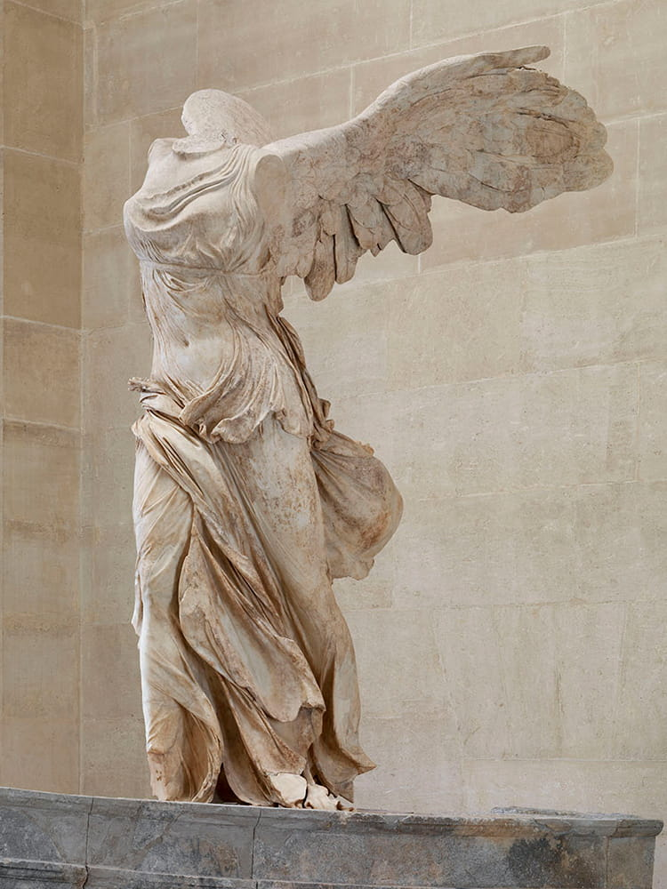
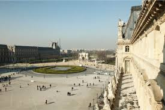
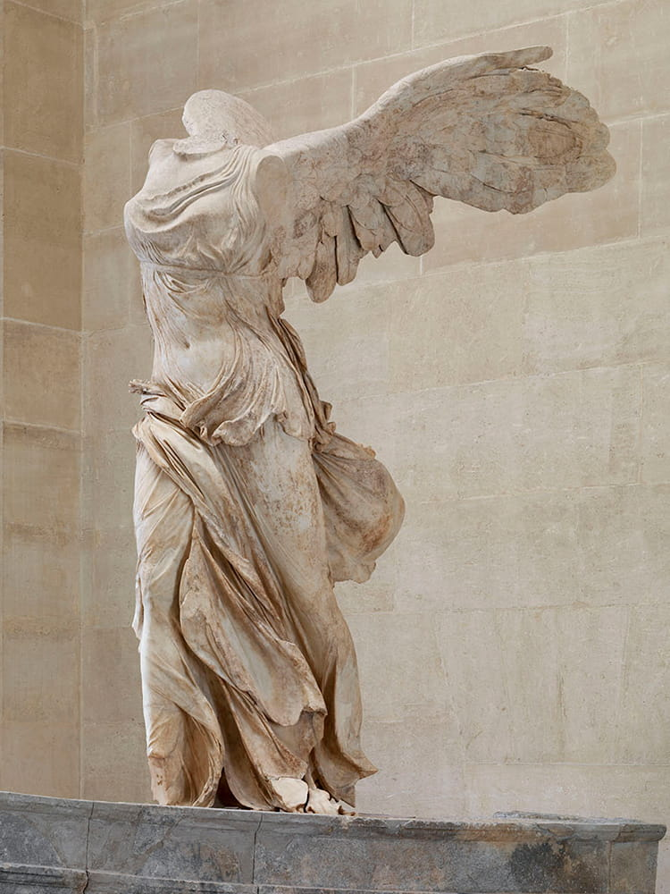
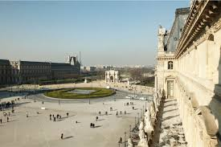
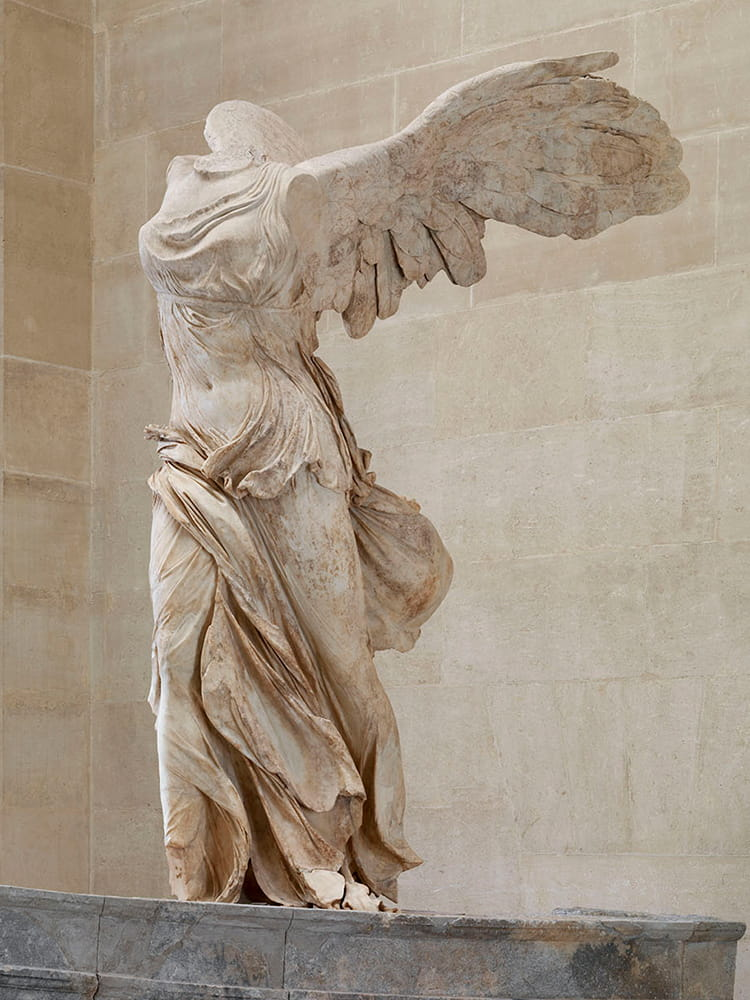
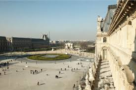
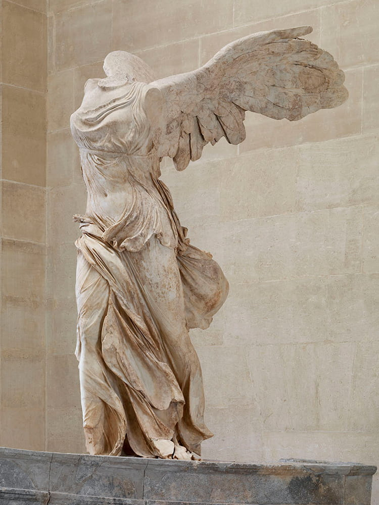
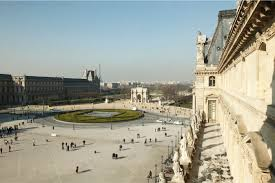
La Libertà che guida il popolo
La Zattera della medusa
Nozze di Cana
Nike di Samotracia
Gioconda

Amore e Psiche
Autore: Sconosciuto
Data: II secolo a.C. circa
Materiale: Marmo pario
Altezza: 245 cm
Ubicazione: Museo del Louvre, Parigi
ulteriori informazioni
Autore: Leonardo da Vinci
Data: 1503-1506 circa
Tecnica: olio su tavola di pioppo
Dimensioni: 77×53 cm
Ubicazione: Museo del Louvre, Parigi
ulteriori informazioni
Artista: Eugène Delacroix
Dimensioni: 2,6 m x 3,25 m
Periodo: Romanticismo
Data di creazione: 1830
Soggetto: Francesi, Rivoluzione di luglio, Marianne
Luoghi: Museo del Louvre (dal 2013), Louvre-Lens (2012–2013), Museo del Louvre (1874–2012), Museo del Louvre
ulteriori informazioni
Autore: Théodore Géricault
Data: 1819
Tecnica: olio su tela
Dimensioni: 491×716 cm
Ubicazione: Museo del Louvre, Parigi
ulteriori informazioni
Autore: Antonio Canova
Data: 1787-1793
Materiale: marmo bianco
Altezza: 155 cm
Ubicazione: Louvre, Parigi
ulteriori informazioni
Autore: Paolo Veronese
Data: 1563
Tecnica: olio su tela
Dimensioni: 666×990 cm
Ubicazione: Museo del Louvre, Parigi
ulteriori informazioni
Visita il museo con Google maps
 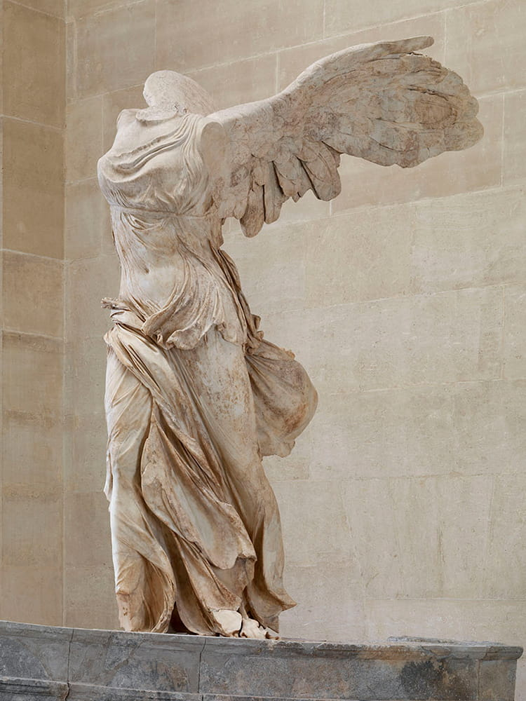
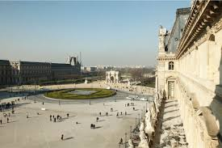
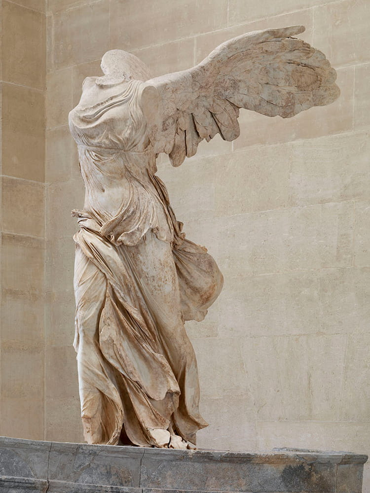
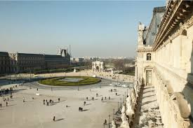